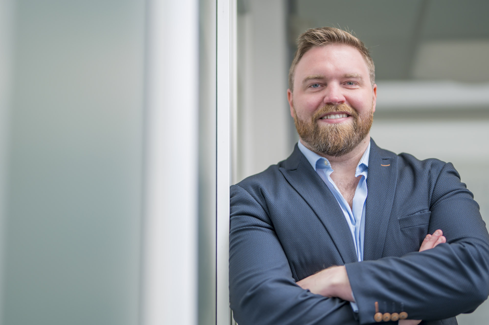

The short version: I've sat at the bench, in the founder's chair, and across the table from investors — mostly in and around therapeutics — and Zephyr Venturecraft is where I bring all three to bear for other ventures.

I started out as a biologist: a BSc at Aberystwyth, then research degrees at Warwick in molecular and synthetic biology. I liked the work, but I kept being pulled toward a different question — how does a good result in a lab ever turn into something real?
The lab was only ever half of it. NanoSyrinx came partly out of frustration with how slow and precarious academia can be when you're trying to build something ambitious. Co-founding and running it taught me the things the bench doesn't: raising money, hiring before you're certain, and making decisions you can't easily undo.
I've also spent time on the other side of the table, seeing how investors actually weigh up deep tech — what draws them in, and what quietly sinks a round. Being right about the science, it turns out, is rarely enough on its own.
Zephyr is where I put that to use for other people. I'm most at home in therapeutics, but the habits carry across deep tech, so I'm happy to look further afield. I'm not a management consultant who happens to like science — I've done the things I now advise on, which is really the only reason the advice is worth having.
Let's get in touch. Tell me where you're stuck and we'll see if I can help.